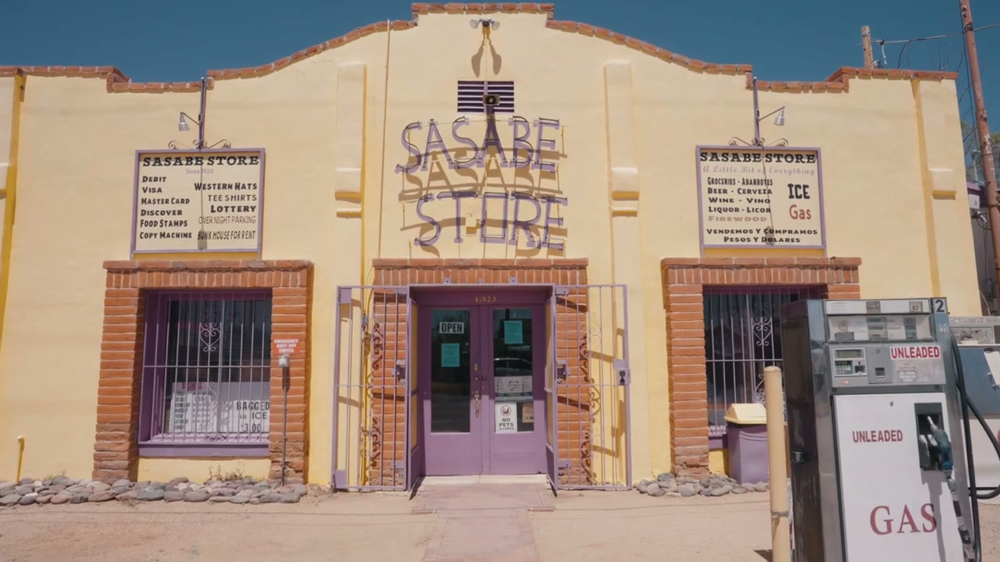
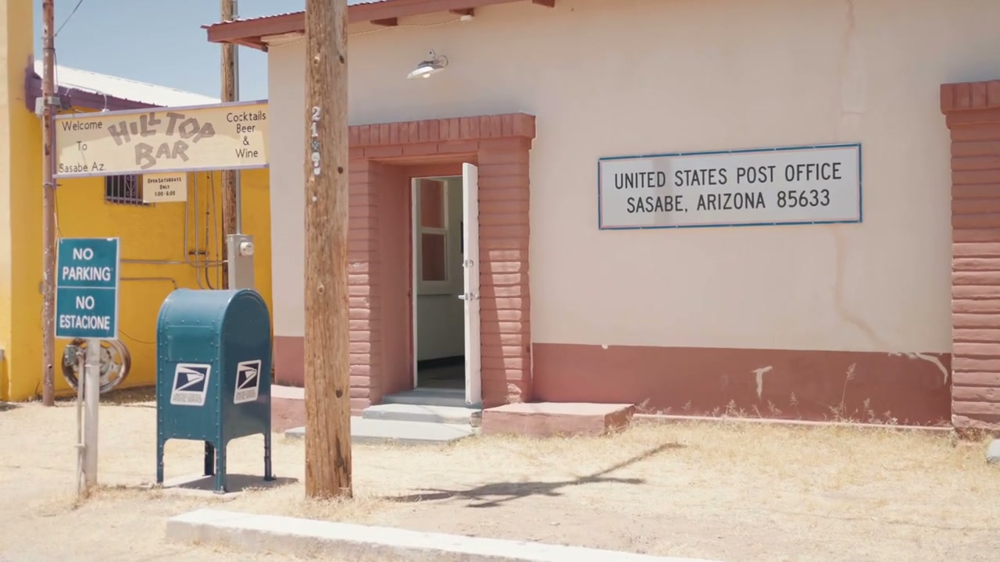
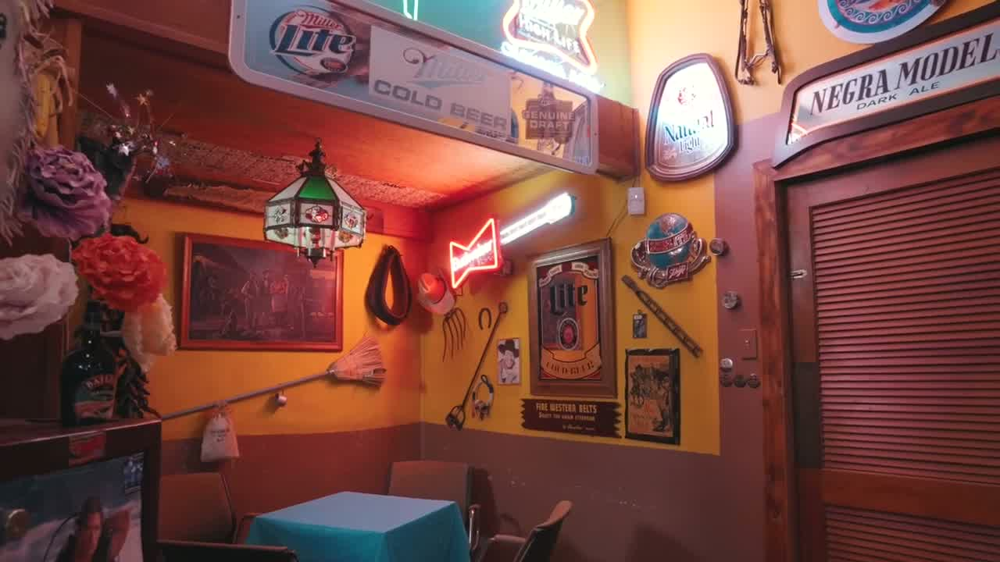

It sounds like something out of a movie: buy a town. In Sasabe, Arizona, that is close to what is actually for sale.
Part of Sasabe is on the market as a single offering. The price is $3,500,000. What that buys is approximately 441.59 acres across three parcels, along with the buildings that make up the center of town: the historic Sasabe General Store, the iconic Hill Top Bar, and the United States Post Office.
The listing went live on July 29, 2026. This article walks through what is included, how the sale works, and what a buyer would actually be getting.
What Is For Sale?
The offering is the whole package, sold together. Three parcels, about 441.59 acres in total, offered as one sale. The parcels are not being sold separately.
That matters, because the pieces fit together. The store, the bar, and the post office sit at the center of Sasabe. The land spreads out around them. A buyer gets the town center and the ground it stands on, in one purchase.
The property also includes multiple tenant-occupied residential homes. These are houses on the property where people currently live as tenants.
The Sasabe General Store

The Sasabe General Store is the most recognizable building in town. It dates back to the early 1900s, and it has served the community as its general store for generations.
For a remote ranching community, a general store was never just a shop. It was where local residents, ranch workers, travelers, and hunters stopped. It was the gathering place at the center of town, in a place where the next store of any size is many miles away.
That is still what it is. The old storefront and the gas pumps out front look like they belong to an earlier Arizona, because they do. The building is part of what makes this property different from a plain piece of land.
The Hill Top Bar and the Post Office

Next to the store are two more pieces of the town center: the Hill Top Bar and the United States Post Office.
The Hill Top Bar is the town’s bar, a local fixture that has been part of Sasabe for as long as most people around here can remember.

The post office is still an active United States Post Office. In a community this small, that is not a small thing. Plenty of towns this size lost their post office years ago. Sasabe kept its mail, its store, and its bar, and that continuity is part of what a buyer is paying for.
The Land
Around the buildings is the land: approximately 441.59 acres of Sonoran Desert country, with views of the Baboquivari Mountains.
The property has direct frontage on State Route 286, the road that runs south through the Altar Valley to Sasabe and the international boundary. It sits right on the U.S.–Mexico border, at the Sasabe port of entry.
A private well is already in place on the property. The land is zoned Residential (RH).
How the Sale Works
The three parcels sell together as one offering. A buyer purchases all three at once. That is how the listing is structured, and it is how it will be sold.
What a buyer does with the property after that is up to them, but it is not a blank check. Any future use is subject to buyer due diligence, zoning, and governmental approvals. The property is a renovation and redevelopment opportunity, which means the buildings and the land will need work, planning, and permits before anything new happens there.
That is the honest version. This is a historic property in a remote place. It is not a turnkey business and it is not a finished project. A buyer should come see it in person, look at the buildings, walk the land, and check everything for themselves before making a decision.
Who Is This For?
This is not a normal house purchase, and it is not for everyone. It fits a buyer who wants something that cannot be found anywhere else: a historic border town, with its store, its bar, its post office, and hundreds of acres of land, all in one sale.
That could be someone who wants to preserve it. Someone who wants a private retreat. Someone with a long-term vision for the buildings and the land. What those buyers have in common is that they are not looking for an ordinary property. They are looking for a place with a story, and Sasabe has one.
If that sounds like you, the next step is simple: reach out to the listing agent, ask your questions, and schedule a time to see Sasabe for yourself. It is the kind of place that is hard to understand from photos alone.
Frequently Asked Questions
How much is Sasabe for sale?
The offering is listed at $3,500,000. It includes approximately 441.59 acres across three parcels, the historic Sasabe General Store, the Hill Top Bar, the United States Post Office, and multiple tenant-occupied residential homes.
Can I buy just one parcel?
No. The three parcels are sold together as one offering.
Where is Sasabe, Arizona?
Sasabe is in southern Pima County, directly on the U.S.–Mexico border. State Route 286 connects it with State Route 86 near Three Points, approximately 45 miles to the north.
What is included in the sale?
Approximately 441.59 acres across three parcels, the historic Sasabe General Store, the Hill Top Bar, the United States Post Office, and multiple tenant-occupied residential homes. The property has direct frontage on State Route 286, a private well in place, and Residential (RH) zoning.
What can I do with the property?
Any future use is subject to buyer due diligence, zoning, and governmental approvals. The property is a renovation and redevelopment opportunity, so a buyer should verify what is possible with the county and other agencies before making plans.
Is Sasabe still for sale?
The listing went live on July 29, 2026. Information in this article is current as of November 16, 2026. Contact the listing agent, Nathan Morrison, to make sure everything is still current.
This article is provided for general informational and educational purposes. Details are believed to be accurate, but are not guaranteed and should be independently verified. This article is not intended as legal, financial, or investment advice. All information is believed to be reliable but is not guaranteed. Buyers should independently verify all information, including acreage, improvements, utilities, zoning, boundaries, and permitted uses, during their own due diligence.